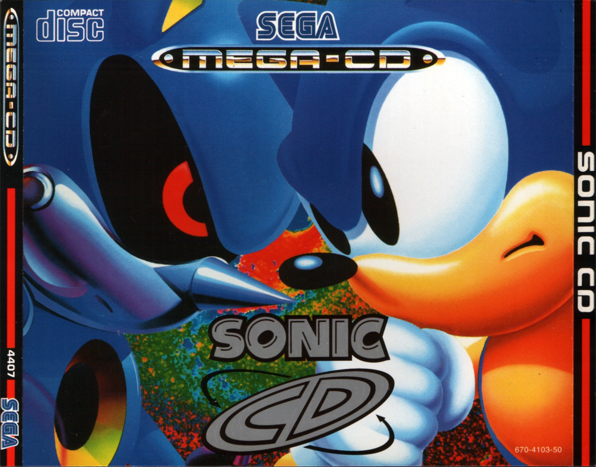
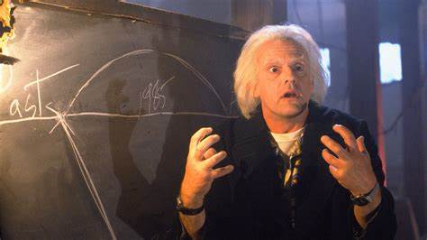
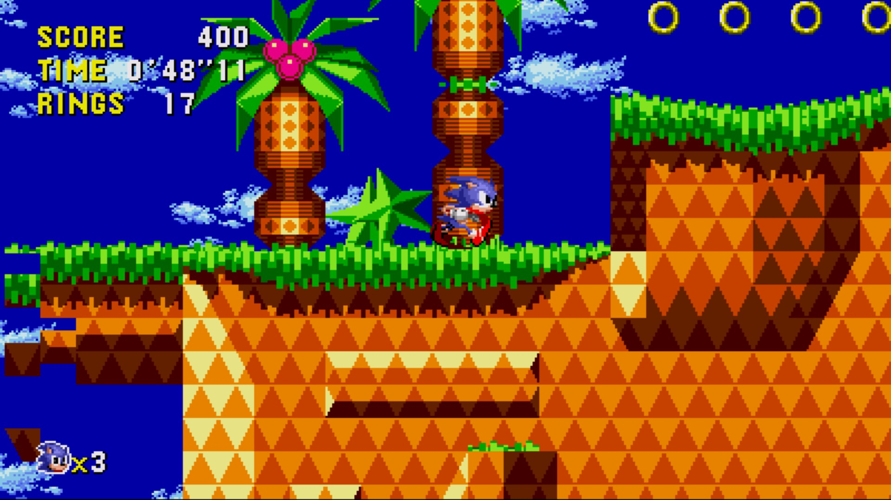
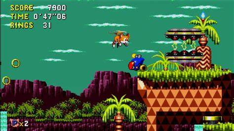
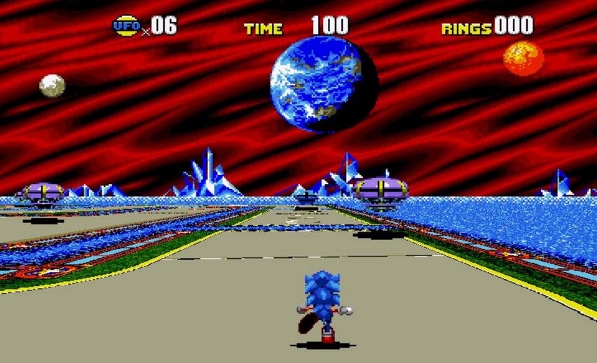
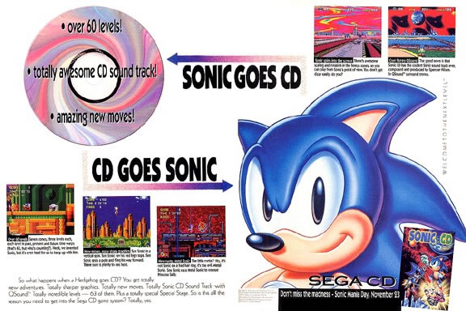

Nom: Sonic CD - Support: MegaCD - Annee: 1993
- Type: Plateforme
Editeur : SEGA - Developpeur: Sonic team.
Troisieme episode de la serie, sortie sur le support MegaCD avec un opus tout a fait different des precedents. Pas dans son gameplay ni dans sa realisation, mais par un principe original proposant a Sonic (le personnage que vous controler) de voyager dans le temps.
Le Dr Robotnik est une nouvelle fois en forme et compte bien detruire la faune et la flore. Mais cette fois-ci, il tient compte de ses erreurs en ne s'attaquant pas aux emeraudes, mais a une petite planete du nom logique de "Little Planet", petit univers tranquille mais qui a la particularite de posseder des pierres qui controlent le temps, et qu'il compte bien utiliser.
l'introduction
On constate que le support CD a son utilite et une avance technologique. Nous voila plonge dans un excellent (petit) dessin anime mettant Sonic en premier plan. Le moins que l'on puisse dire, c'est que l'animation est bonne et les performances du MegaCD tres correct pour cette epoque.
Retour vers le futur
Malgre le fait que Sonic CD soit le troisieme episode, il se situe entre le 1er et le second opus. D'ailleurs sa realisation n'est pas sans rappeler celle du premier. A part l'ajout d'une technique de gain de vitesse, Sonic CD se jouera exactement comme le premier opus tout en gardant une jouabilite simple.
 Oui, ce jeu s'inspire d'un film de science fiction.
Ainsi, Sonic devra parcourir les 7 mondes divises en 3 zones, 4 niveaux de temps dans les deux premiers stages (Passe - Present - Futur - Bon futur)

Le mystère de la version prototype 1994
D'apres quelques sources venant des devloppeurs du jeu, il y'aurait eu normalement un second volet qui aurait du sortir dans une edition rajoutant 3 personnages jouables (Tails le renard jaune sur l'image ci contre, Amy et Metal sonic). mais malheuresement pour eux, les couts de production sont trop important.
Et la mémoire du disque MEGA CD encore insuffisant par rapport au format CD R plus evoluer en terme de vitesse et capacité de stockage mais qui sortira 5ans plus tard en Europe.

De plus on aura egalement des niveau speciaux tout en 3 dimentions ou il faudra parcourir la carte tout en detrusant les robots flotants au dessus de vous avant que le temps inparti ne sois ecouler!Sinon il faudra recommencer le niveau dans sa globalité afin d'obetinir les 50 anneaux pour acceder
au stage special et retenter sa chance. Sans rancunes...

une revolution technologique
A l'Epoque il etait assez compliquer de pourvoir ventre un jeu directement sans moyen de communication fiable. c'est pourquoi les devloppeur de SEGA
ont creer une affiche publicitaire afin de l'afficher dans les journaux americains.

De nombreuses personnes ont tenter de voir les limites possibles et les bugs et defauts de conception du jeu pour les exploiter lors de leurs performance
Tentative de Speedrun (temps mit : 17m 53s) commenter en direct par le JoueurDugrenier "voir sa chaine youtube" a l'exposition de la Japan-expo lors de sa 5ème edition en 2015